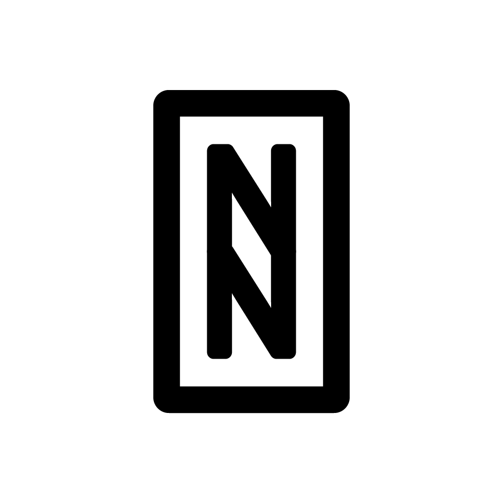

GABE
WEPT
Nanotecnologia
Futuro
Expansão
Sobre a naslon

NANOTECNOLOGIA
Na Naslon, buscamos constantemente inovação para transformar o setor energético. Atualmente, nossos projetos GABE e WEPT, tecnologias revolucionárias que redefinem a geração e a transmissão de energia. Além disso, estamos estudando o potencial da nanotecnologia, uma ciência promissora que pode impulsionar ainda mais varias soluções no futuro.
O que é Nanotecnologia?
A nanotecnologia trabalha com a manipulação da matéria em escala atômica e molecular, na ordem de nanômetros (um bilionésimo de metro). Nessa escala, os materiais adquirem propriedades únicas, como maior resistência, condutividade aprimorada e novas interações químicas. Seu impacto já está sendo sentido em áreas como eletrônica, saúde e energia, e acreditamos que ela pode ser um diferencial importante em nossas futuras pesquisas.Nosso Compromisso com a Inovação
Atualmente, nossa principal atuação está nos projetos GABE e WEPT:GABE (Generation Active Boundless Energy): Um sistema inovador que utiliza átomos tanto para fissão quanto para fusão, convertendo essa reação em eletricidade limpa e renovável. Além de não gerar poluição, ainda remove gases do efeito estufa da atmosfera, tornando-se uma solução sustentável para o futuro energético.
WEPT (Wireless Energy Power Transmission): Nosso poste de transmissão de energia sem fio, que substitui a fiação aérea por linhas atômicas invisíveis soterradas. Esse sistema elimina poluição visual, reduz custos de manutenção e aumenta a segurança da infraestrutura elétrica, além de evitar várias contradições atuais.
A Nanotecnologia no Nosso Horizonte
Embora nossa principal atuação no momento seja nos nossos projetos, estamos explorando como a nanotecnologia pode se aprimorar no futuro. Materiais avançados, nanossensores e novas formas de condução de eletricidade podem trazer ainda mais eficiência e inovação ao nosso mundo.Nosso compromisso é continuar na vanguarda do setor energético, estudando e desenvolvendo soluções que transformem a forma como o mundo gera e distribui energia. A nanotecnologia pode ser um dos pilares dessa revolução, e estamos prontos para explorar seu potencial.

Tudo depende do seu ponto de vista!
Copyright © 2024 Naslon Inc.
Todos os direitos reservados.
Todos os direitos reservados.